Tính Năng Và Cách Sử Dụng TamlpeMacro
Cấp Quyền, Giao Diện và Nút
2. Sau khi tải xong, app sẽ yêu cầu quyền trợ năng
- Trong mục Hỗ Trợ Tiếp Cận hoặc Accessibility chọn MacroAuto.
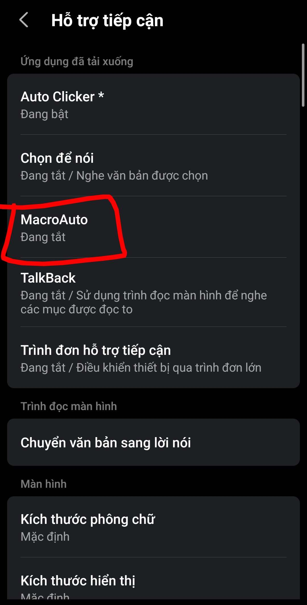
- Bật và cấp quyền cho ứng dụng
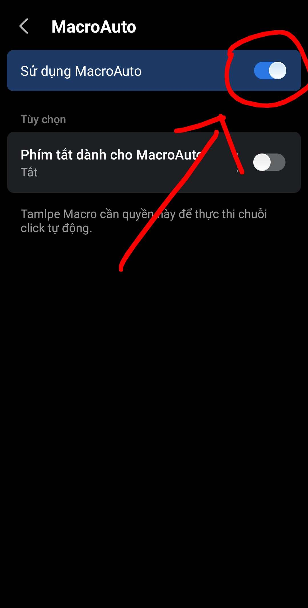
3. Sau đó app sẽ yêu cầu quyền hiển thị
- Tìm MacroAuto trong mục Hiển thị trên các ứng dụng hoặc Overlay
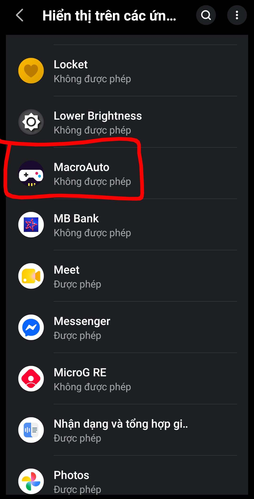
- Bật và cấp quyền cho ứng dụng
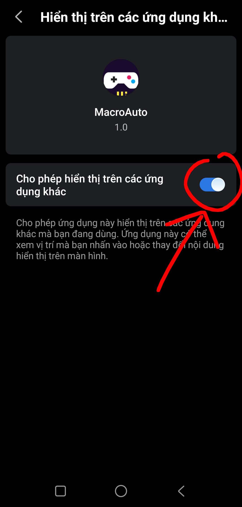
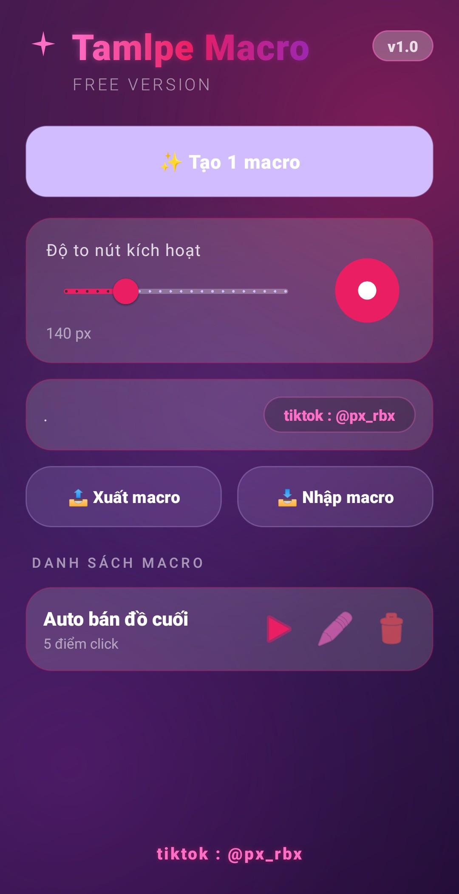
Đây là giao diện ứng dụng sau khi vào.
4. Chức Năng Các Nút
- Tạo Macro : Thiết lập 1 macro mới tuỳ chỉnh
- Độ To Nút Kích Hoạt : Độ to của nút kích hoạt sau khi các bạn tạo thành công 1 macro
- Xuất Macro : Xuất file config của macro ra thư mục
- Nhập Macro : Nhập file config của macro từ thư mục (có thể dùng để backup khi app cập nhật)
- Danh sách Macro : Những config mà anh em đã tạo
- Một Macro sẽ có 3 nút chính. Nút Tam giác là Bật hotkey + kích hoạt macro, cây bút là chỉnh sửa macro, thùng rác là xoá macro
Thiết Lập Thao Tác, Chức Năng
Thiết Lập Macro
- Sau khi ấn vào tạo macro, sẽ có 1 Gui hiện lên như này :
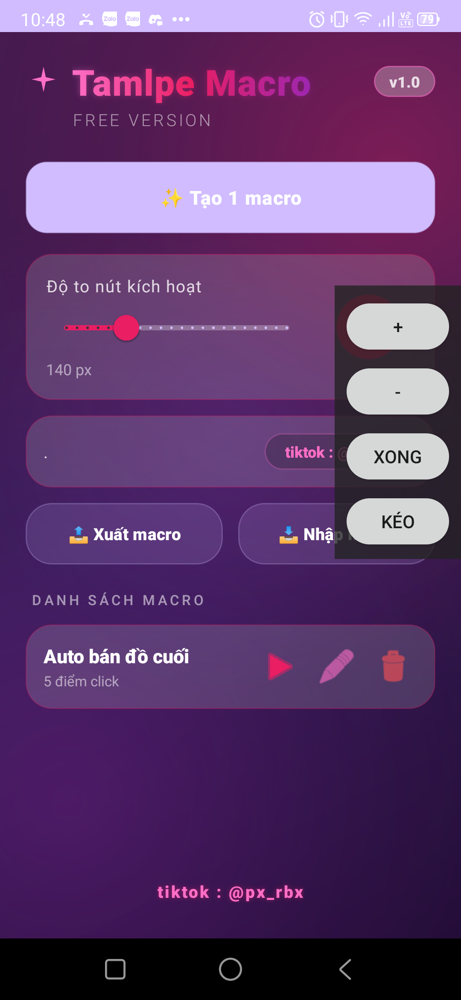
- Dấu Cộng : Thêm điểm click
- Dấu Trừ : Bỏ điểm click gần nhất mới thêm
- Xong : Thiết lập xong và muốn lưu
- Kéo : Di chuyển Gui
- Hãy Thiết lập macro theo đúng ý của anh em
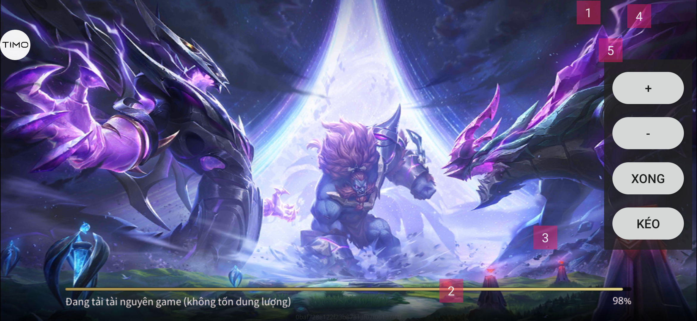
Chức năng điểm click, lưu Config
- Delay : Ấn giữ vào điểm anh em muốn set Delay, sau đó điền số và ấn OK.
- Delay tức là số giây sẽ chờ để click điểm tiếp theo
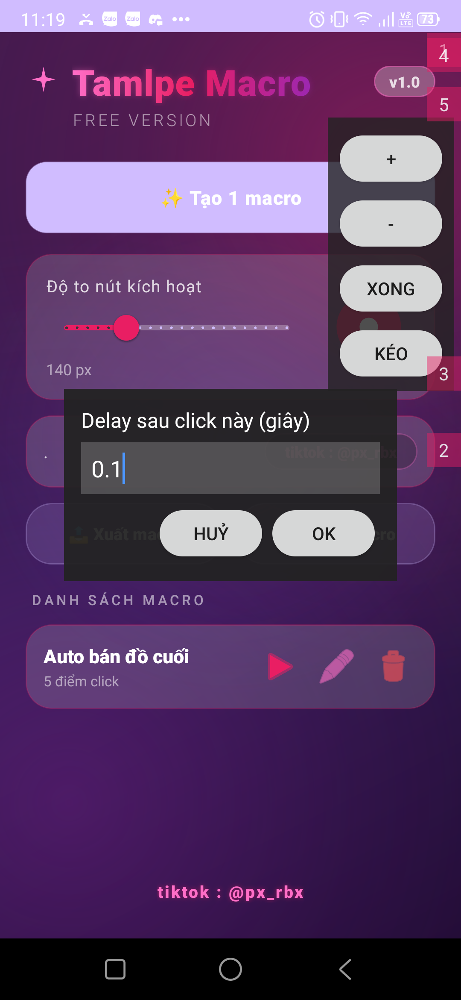
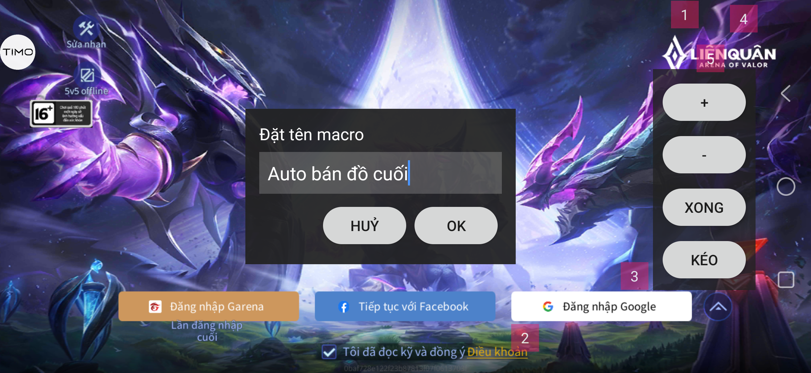
Sau khi thiết lập xong, ấn OK, Cấu Hình Macro sẽ được lưu vào máy.
Chức năng Hotkey
- Sau Khi Lưu, màn hình điện thoại sẽ hiện lên nút hotkey :
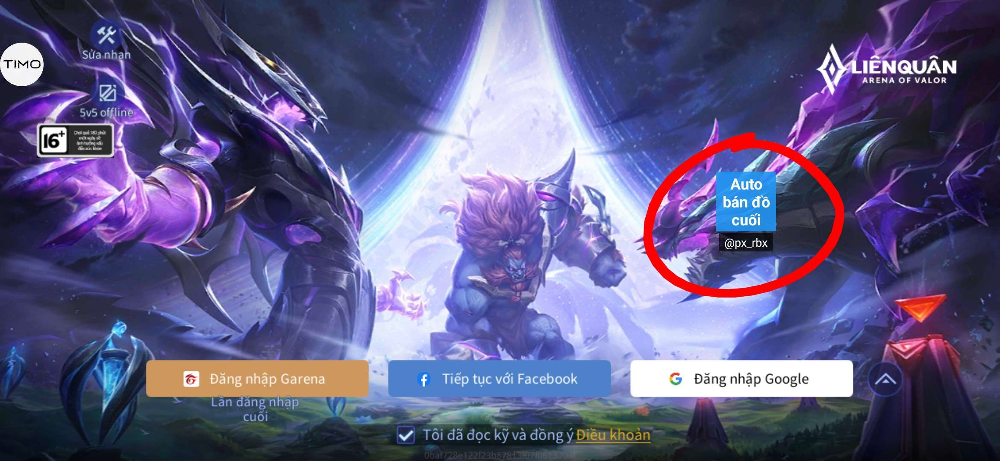
- Giữ vào mép dưới nút và di chuyển để di chuyển nút (ấn ở trên sẽ lỗi)
- Giữ vào mép dưới nút 0,7 giây để Xoá nút (xoá nút chứ ko xoá macro)
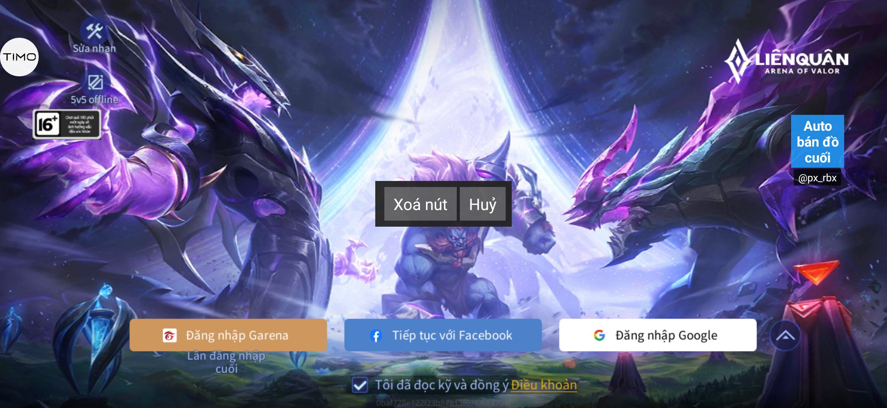